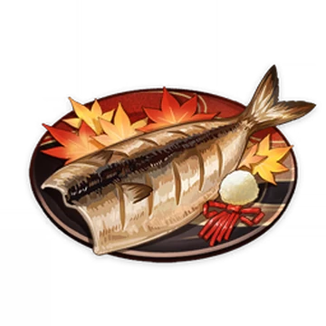
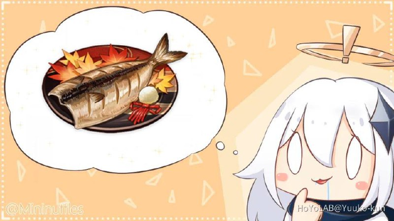

Kaedehara Kazuha's favorite dish -
All-Weather Beauty

Description
Made from fish that have been dried on the ship.
Kazuha claims that they were completely ordinary fish.
But this flavor... this must surely be the definition of
free, all-embracing nature, no?
Ingredients:
- Horse mackerels - 2x
- Water - 1 l
- Coarse salt - 70 g
- White radish
- Cooking oil
Steps
- Prepare the mackerels;
- Add salt to the water and stir it up;
- Put the mackerels into the salted water, then get them out and leave to marinate overnight;
- Grate the radish;
- Fry the mackerels
And that's it!
